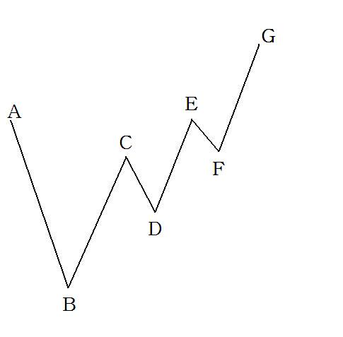

第364篇•价格走势的形态学与动力学（2）
谷为陵
我在上篇博文中给出了一波与两波上涨型主升浪的精细形态结构，了解这些精细结构有何用处呢？我要告诉大家，这是确定几类重要买点的基础。何谓买点，就是买入后股价能够上涨的价格或者价格区间。要实现确定性盈利，就要选择高确定性买点。从抓主升浪来看，确定性买点主要存在于两个区域：一是第一波主升浪的启动点或者启动阶段，这是第一波主升浪的买点；二是第二波主升浪的启动点或者启动阶段，这是第二波主升浪的买点。我昨天所讲的两类主升浪的精细形态结构，是为了确定第二波主升浪的买点。
有人会问，那第一波主升浪的买点该怎么确认呢？这是另一个问题，我们以后再说。我为什么要先讲第二波主升浪的买点呢？这是因为，相较于第一波主升浪，第二波主升浪的信号特征更加明显，更容易识别。很多股票在启动第一波主升浪时，由于各种原因，投资者会忽视这些股票的巨大爆发力而错失其第一波主升浪，但是，若这些股票，或者这些股票之中的某些股票能够最终成为大牛股与大黑马，从大概率来看，其走势往往不会只是一波到顶的，一般会走出两波甚至多波的主升浪。这就形成了一种选股模式，那就是关注已经走出一波主升浪的强势股，分析与观察这些股票能否再走出第二波主升浪，并尽可能去抓住这个主升浪。我们分析主升浪形态的目的，就是为了发现这些股票启动的第二波主升浪的蛛丝马迹。
假若一只股票能够形成两波主升浪，那么，其大的浪型结构一定是“第一波主升浪+调整+第二波主升浪”。对于暴涨型主升浪来说，第一波主升浪的整个过程都是比较好确认的，但是，在第一波主升浪结束后的调整阶段究竟会是何种形态，就事先难以预测了。为了能够半定量的研究这个问题，我在上文中给出了调整阶段可能的8种形态，算是给调整形态进行了完全分类。投资者可以根据这个完全分类，并通过观察股价的走势，分析股价最有可能走出哪一类的调整形态。
说了半天，第二波主升浪的买点到底该怎样确定呢？我们还是先看一张图：

在上图中，买点都在哪里呢？按照《缠论》的说法，上图中的买点可分为三类，如下图所示：
B点：为第一类买点，是股价的反转点。
D点：为第二类买点，是第一波上涨行情结束后股价回调的最低点。
F点：为第三类买点，是中枢的破坏点。C点、D点、F点组成一个中枢，用红色框子框住。
从图形上看，《缠论》的三类买点都是无懈可击的，但是，在实际操作中，我认为没有人能够做到非常精确地抓住这些买点。为什么呢？这是因为，当股价运行到B、D、F点时，大家注意到价格的原有趋势没有？原有的趋势都是向下的，比如，AB、CD、EF线段的方向都是向下的。既然这些趋势都是向下的，那么，只有等到这些下跌趋势止跌企稳，或者是止跌反转向上后，我们才能够确认原有的下跌趋势是结束了，新的上涨趋势开始形成了。在没有确认这个新的上涨趋势形成之前，谁也不知道原有的下跌趋势会持续多长，那么，在这个价格趋势之内的所有的点，都不是买点，或者说下跌趋势不存在买点，除非你非要买套，那我就管不着了，只要你不想买套，那么，这就是一个真命题。由此很容易推论，买点一定是存在于上涨趋势之中的，可以是上涨趋势的启动点，也可以是持续点。
有人会问，我恰巧就买在了B、D、F点，难道不成吗？我要说，除非你是庄家，能够用资金托住下跌的股价，硬吃出这些最低点，一般的投资者想都不要想这个事情，你可以蒙对一两次，但你不可能总是蒙对。另外，即使是买在上涨趋势的启动点，也不是上图中的B、D、F点，而应该是在这些点位靠右侧的位置，如下图所示：
上图中的B1、D1、F1点，都是较为符合操作逻辑的买点，但也并非属于高确定性的买点。这是因为，B1、D1、F1点离左边的价格最低点B、D、F点太近了，或者说BB1
DD1、FF1这些线段太短了，仅仅根据BB1
DD1、FF1线段的长度，很难确认这是一个新的上涨趋势的形成。为此，就需要借助其它的辅助指标，来佐证这些买点是否成立。我们先来看看《缠论》是怎么确定这些买点的。
在确定第一类买点B或者B1的时候，《缠论》是依靠背驰的方法，其中，是分析价格与MACD的背驰关系，即，价格创新低，但MACD没有创新低，等等
对于第二类买点D或者D1，《缠论》没有什么定量的方法，只有经验的方法，因为D点会跌到哪里，事先很难确定，最多只能给出一个大致的范围。
对于第三类买点F或者F1，《缠论》的确认方式与第二类买点D或者D1大致相似，只有经验的方法。《缠论》认为，只有当价格停留在F点，不深入到之前形成的中枢之中时，才能够确定F点是中枢的破坏点，这将可能意味着价格将会摆脱中枢的引力，而向上拓展，形成新的上涨行情。但是，要确定F点的支撑能力，仅靠F点自身是不够的，必须依靠其右侧的F1点来确认。
以上谈的是《缠论》对于三类买点的确证，那么，我自己的观点是怎样的呢？。
首先，对于第一类买点B或者B1，我认为，可将《缠论》的背驰方法与我的“五面分析法”相结合，那么，可以部分提高分析的可靠性。关于第一类买点的问题，我以后还会讲。
其次，对于第二类买点D或者D1，我也没有什么定量的方法，只有经验的方法，但是，若运用“五面分析法”，可以大致知道D或者D1的范围。比如，我们可以大致知道，在强势市场中的热门板块的龙头股，其第一波主升浪结束后，股价往往不会以金字塔形态一路下跌，期间会出现反弹，这个反弹的位置，应该是在股价自高点回落15%～30%的区间，这个区间的最低点，就是D点所在的位置。当然，只有在价格运行到D1点后，我们才能够反过来确认D点的最低点的有效性。即使如此，我还是认为这样做还是远远不够的，因为，不管怎样，DD1线段的长度还是太短，难以据此确认一个上涨趋势的形成。为了确定可靠的买点，我认为还是应该抓大放小，专注于寻找趋势的突破点。什么是趋势的突破点呢？很显然，股价创出新高时，就是一种很典型的突破点。还是以上图为例，则第二类与第三类买点的突破点如下图所示：
上图中红色的T1点是前期高点C点的突破点，红色的T2点是前期高点E点的突破点。以突破点确认买点的市场逻辑是什么呢？就是假设上涨趋势是持续的，那么，价格一定是不断突破前期高点而向上的。但是，这里面也有一个问题，那就是当上涨趋势最终不存在，或者在短期内不存在时，那么，这些突破点不就成为了假突破了吗？这确实是一个很棘手的问题，我会在下篇博文中探讨这个问题。